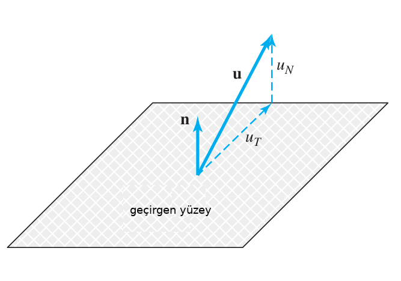

Taşınımsal Nakil (Convective Transport)
Bu kavramı anlamak için bir akışın önünde duran geçirgen bir yüzey düşünelim. Akışı temsil eden hız alanını biliyoruz, bu alanın yüzeydeki vektörleri bir sıvı parçacığının o noktadaki, o andaki hareketini gösteriyor.
Bir sıvı parçacığı yeri değiştirilebilecek belli oranda bir madde, öğe içerebilir, ve o parçacık yüzeyin bir tarafından diğer tarafına geçtiğinde parçacıkla beraber ögenin yeri de değişmiş olur. Dikkat nakletme direk bir geçiş ima eder, hızın normal bileşenine oranla bir geçiştir bu. Bu bağlamda hızın sadece normal (yüzeye dik) olan bileşenine bakarız, çünkü yüzeye teğet olan bileşen hiç bir geçiş oluşturmazdı, yüzeye paralel olan bir gidiştir bu. Tabii ki yüzeyin farklı noktalarında farklı hızlar, ve farklı öğe değerleri olabilir, bu sebeple taşınımsal naklinin matematiksel tarifi bu farklılıkları göz önüne almalıdır.

Şimdi taşınımsal nakil $\Gamma_C$ ile tanımlarsak, bu değişken bir zaman anında sıvının akışı sebebiyle bir öğenin yüzeyi geçme oranı olacaktır. Eğer $\epsilon$ birim kütledeki öğe miktarı ise, $\rho \epsilon$ birim hacimdeki o öğenin miktarı olur (çünkü $\rho$ yoğunluk, birim hacimdeki kütle). O zaman herhangi bir noktada bu ögenin hız alanı içinde yerel bir hız vektörü yönünde anlık taşınma oranı / hızı $\rho \epsilon u$ olur, $u = \bar{u}(\bar{x},t)$. Bu oranı yüzeyden geçise tercüme edersek, yüzeydeki $n$ normaline sahip $\mathrm{d} S$ yüzey alanından geçiş oranı
$$ \delta \Gamma_C = \rho \epsilon (u \cdot n) \mathrm{d} S $$
Daha önce belirttik yüzeyin her noktasında farklı nakil oranları olabilir, tüm geçirgen yüzey için $\Gamma_C$ hesabı için her yüzey ögesinden olan geçiş oranlarını bir yüzey entegrali ile toplarız,
$$ \Gamma_C = \int_S \rho \epsilon (u \cdot n) \mathrm{d} S $$
Bu tür entegrallere taşınımsal akış entegrali (convective flux integral) ya da kısaca taşınımsal entegral ismi veriliyor. Fakat dikkat bu hesabın sonucu bir oran (birim zamandaki öğe), akış değil (birim alandaki öğenin birim zamandaki hızı).
Kabaca öğe dedik, ama pek çok kavram üstteki formüller kapsamına giriyor, mesela kütle hesabı için $\epsilon = 1$ diyebiliriz, ya da momentum için $\epsilon = u$. Isı taşınımı da benzer şekilde temsil edilir.
Reynolds Nakletme Teorisi (Reynold's Transport Theorem)
Daha önce pür kütle hesabında $\epsilon = 1$ üzerinden türetilen muhafaza kanununu görmüştük,
$$ \frac{\partial \rho}{\partial t} + \nabla \cdot (\rho u ) = 0 $$
Ya da
$$ \frac{\partial \rho}{\partial t} + \mathrm{div} (\rho u ) = 0 \qquad (1) $$
Bu $\epsilon = 1$ durumudur, daha genel $\epsilon$ için
$$ \frac{\partial \rho \epsilon}{\partial t} + \mathrm{div} (\rho \epsilon u ) = 0 $$
elde edileceğini ispat etmek zor değil. Terim $\mathrm{div}$ içindekilere çarpım kuralını uygularsak, ve $\epsilon$ yerine $\phi$ kullanınca açılım [3, sf. 24]
$$ \rho \frac{\partial \phi}{\partial t} + \phi \frac{\partial \rho}{\partial t} + \rho \mathrm{div} (\phi u ) + \phi \mathrm{div} (\rho u ) = 0 $$
$$ \rho \frac{\partial \phi}{\partial t} + \phi \mathrm{div} (\rho u ) + \phi \left( \frac{\partial \phi}{\partial t} + \mathrm{div} (\rho u ) \right) = 0 $$
Akış alanı süreklilik kuralını destekliyor, yani (1) geçerli, o zaman parantez içindekiler yok sayılır,
$$ \rho \frac{\partial \phi}{\partial t} + \phi \mathrm{div} (\rho u ) = 0 $$
Üstteki formülü kontrol hacmi $V$ üzerinden entegre edip Gauss'un uzaklaşım teorisini uygulayınca,
$$ \iiint_V \left( \rho \frac{\partial \phi}{\partial t} + \phi \mathrm{div} (\rho u ) \right) \mathrm{d} V = \iiint_V \rho \frac{\partial \phi}{\partial t} + \oint \oint_S \phi u \cdot n \mathrm{d} S \qquad (2) $$
Reynolds nakletme teorisi budur. Eşitliğin sağ tarafının sıfıra eşit olduğunu düşününce ifadenin söylediği $\phi$'deki değişim oranının kontrol hacmi üzerindeki akışların (flux) net dengesine eşit olduğudur; denge derken girenler eksi çıkan akışların net toplamı [3, sf. 25].
Momentum Dengesi
Kütle aktarıldığı gibi momentum da aktarılabilir, ve bir kontrol hacminde incelenebilir. Önce Newton'un kanununu hatırlayalım,
$$ \frac{\mathrm{d} (m u)}{\mathrm{d} t} = F $$
ki $F$ ve $u$ vektör. Momentumun muhafaza edildiğini vurgulamak için Newton'un kanununu sabit kontrol hacmi üzerinden entegre edelim, ve sağ tarafta bu Reynolds nakil teorisinin momentum muhafaza formuna tekabül edecektir. O sağ taraf nasıl formülize edilir? Daha önce $\epsilon = 1$ ile kütle $\epsilon = u$ ile momentum formülüne erisebileceğimizi söylemiştik. Ya da Reynolds nakil formülü (2)'de $\phi = \rho u$ ile momentum dengesi elde edebiliriz [3, sf. 26],
$$ \iiint_V \frac{\mathrm{d} (m u)}{\mathrm{d} t} \mathrm{d} V = \iiint_V \rho \frac{\partial u}{\partial t} \mathrm{d} V + \oint \oint_S \rho u u \cdot n \mathrm{d} S = \iiint_V F \mathrm{d} V \qquad (3) $$
Muhafaza Kanunları Tek Boyut
İçinde gaz olan sadece tek boyutuna baktığımız bir tüp düşünelim, $x$ tüpün üzerindeki bir noktayı temsil edecek, $\rho(x,t)$ ise tüpün $x$ noktasında ve $t$ anındaki yoğunluğunu verecek diyelim. Yoğunluğu kullanarak $x_1$ ve $x_2$ noktaları arasındaki $t$ anındaki kütle
$$ \int _{x_1}^{x_2} \rho(x,t) \mathrm{d} x $$
ile hesaplanabilir. Tüpün duvarları tam izole ise ve kütle yoktan varedilip yokedilemeyeceğine göre tüpe gaz giriş ya da çıkış sadece $x_1,x_2$ noktalarından olabilir [4, sf. 14]. Şimdi bir gaz hareket hızı düşünelim, $u(x,t)$ ile, o zaman gaz akma oranı, ya da akış (flux)
$$ flux = \rho(x,t) u(x,t) $$
olur. Üstteki fiziksel kurallardan hareketle $[x_1,x_2]$ deki kütlenin değişim oranı $x_1$ ve $x_2$ noktalarındaki akışın farkına eşit olmalıdır,
$$ \frac{\mathrm{d}}{\mathrm{d} t} \int _{x_1}^{x_2} \rho(x,t) \mathrm{d} x = \rho(x_1,t) u(x_1,t) - \rho(x_2,t) u(x_2,t) $$
İşte bu muhafaza kanununun entegral formudur.
Üstteki formülü $t_1,t_2$ zaman aralığı için entegre edersek, ki böylece bu zaman içindeki tüm toplam akışı hesaplayabilelim, o zaman
$$ \int_{t_1}^{t_2} \left( \frac{\mathrm{d}}{\mathrm{d} t} \int _{x_1}^{x_2} \rho(x,t) \mathrm{d} x \right) = \int_{t_1}^{t_2} \rho(x_1,t) u(x_1,t) \mathrm{d} t - \int_{t_1}^{t_2} \rho(x_2,t) u(x_2,t) \mathrm{d} t $$
Soldaki kısım zaman üzerinden türevin yine zaman üzerinden entegrali, o zaman yokolabilir, Calculus'un Temel Teorisi üzerinden basitleştirirsek,
$$ \int _{x_1}^{x_2} \rho(x,t_2) \mathrm{d} x - \int _{x_1}^{x_2} \rho(x,t_1) \mathrm{d} x = \int_{t_1}^{t_2} \rho(x_1,t) u(x_1,t) \mathrm{d} t - \int_{t_1}^{t_2} \rho(x_2,t) u(x_2,t) \mathrm{d} t $$
Ufak bir yer değiştirme sonrası
$$ \int _{x_1}^{x_2} \rho(x,t_2) \mathrm{d} x = \int _{x_1}^{x_2} \rho(x,t_1) \mathrm{d} x + \int_{t_1}^{t_2} \rho(x_1,t) u(x_1,t) \mathrm{d} t - \int_{t_1}^{t_2} \rho(x_2,t) u(x_2,t) \mathrm{d} t $$
Üstteki formun değişik bir şekli ileride lazım olacak, zaman adımı atmaya uğraştığımız hesapsal yöntemlerde $t_1$ ve $t_2$ üzerinden bir entegral, hesabı bir sonraki zamana geçirmeye uğraştığımızda, adım attığımızda.
Neyse şimdi diferansiyel forma geçise dönelim. Bu noktada $\rho(x,t)$ ve $u(x,t)$'nin türevi alınabilir fonksiyonlar olduğunu farz ediyoruz. Üstekini, yine ufak bir değişim sonrası,
$$ \int _{x_1}^{x_2} \rho(x,t_1) \mathrm{d} x + \int _{x_1}^{x_2} \rho(x,t_2) \mathrm{d} x - \int_{t_1}^{t_2} \rho(x_2,t) u(x_2,t) \mathrm{d} t - \int_{t_1}^{t_2} \rho(x_1,t) u(x_1,t) \mathrm{d} t = 0 \qquad (4) $$
olarak görelim. Eğer Calculus'un Temel Teorisi ile ilk iki terime $\int_{t_1}^{t_2} .. \mathrm{d} / \mathrm{d} t$ son iki terime $\int_{x_1}^{x_2} .. \mathrm{d} / \mathrm{d} x$ ekleyebilirsek, tüm terimlerde aynı entegraller olacağı için, $\int_{t_1}^{t_2} \int_{x_1}^{x_2} $ altında tüm terimleri gruplayıp basitleştirmek mümkün, ve bunlar sıfıra eşit olur. Bu bizi diferansiyel forma götürebilir. Yani
$$ \rho(x,t_2) - \rho(x,t_1) = \int_{t_1}^{t_2} \frac{\partial }{\partial t} \rho(x,t) \mathrm{d} t $$
ve
$$ \rho(x_2,t)u(x_2,t) - \rho(x_1,t)u(x_1,t) = \int _{x_1}^{x_2} \frac{\partial }{\partial x} (\rho(x,t)u(x,t)) \mathrm{d} x $$
eşitliklerinden hareketle, bunları (4)'e uygulayıp
$$ \int _{t_1}^{t_2} \int _{x_1}^{x_2} \left\{ \frac{\partial }{\partial t} \rho(x,t) + \frac{\partial }{\partial x} (\rho(x,t)u(x,t)) \right\} \mathrm{d} x \mathrm{d} t = 0 \qquad (4) $$
elde ediyoruz. Bu ifadenin $[x_1,x_2]$ ve $[t_1,t_2]$ arasındaki tüm değerlerde doğru olması gerektiği için entegre edilenin sıfır olması gerekiyor ([5]'dekine benzer bir mantık yürütüldü), yani
$$ \rho_t + (\rho v)_x = 0 $$
olmalı. Böylece kütlenin muhafaza kuralını diferansiyel formda elde etmiş olduk.
Bu formu izole halde çözmenin tek yolu $v$'nin önceden bilindiği durumdadır, ya da $v$ fonksiyon $\rho(x,t)$'ye bağlı bir fonksiyon olmalıdır, yani $f(\rho) = \rho v$ gibi. Bu durumda üstteki ifade $\rho$ için tek sayısal muhafaza kanunu haline gelir,
$$ \rho_t + f(\rho)_x = 0 $$
Diğer Muhafaza Edilen Büyüklükler
Tekrar üzerinden geçip, genişletelim, [6, sf. 15] notasyonu ile devam edelim, ölçmek istediğimiz sıkıştırılamayan bir sıvı, gaz büyüklüğü var, ve bunu $x$ noktasında $t$ anı için $q(x,t)$ ile ölçüyoruz, takip ediyoruz. Mesela sıvı içine bir işaretleyici karıştırılmış, mürekkep gibi, o takip ediliyor. Takip edilen bu ölçümün yoğunluğu $q(x,t)$ olsun, bu fonksiyonun ne olduğunu anlamak istiyoruz. Bu işaretleyicinin $x_1$ ve $x_1$ arasındaki kütlesinin hesabı için
$$ \int _{x_1}^{x_2} q(x,t) \mathrm{d} x $$
hesaplanır. Şimdi akış (flux) kavramını tekrar tanıştıralım, herhangi bir $x$ noktasında ve $t$ anındaki işaretleyici yoğunluğunun akma oranı akistir. Bilinen $u(x,t)$ hızı ve yoğunluk $q(x,t)$'yi çarparak onu elde edebiliriz,
$(x,t)$'deki akış = $u(x,t) q(x,t)$
Dikkat, akış sıfırdan büyükse bu sağa doğru akış demektir, küçükse sola doğru akış demektir. Hız bilinen bir büyüklük olduğuna göre bir akışı $f$'yi $q$'nun fonksiyonu olarak yazabiliriz,
akış = $f(q,x,t) = u(x,t) q$
Şimdi üstteki entegral ile akış formülünü bağlayalım. Kütle muhafaza edildiği için $x_1$ ve $x_2$ arasındaki kütleyi hesaplamıştık hatırlarsak, bu kütlenin zamana göre değişim oranı sadece ve sadece o bölgeye sağdan ve solda olacak akışlar ile mümkündür.
$$ \frac{\mathrm{d}}{\mathrm{d} t} \int _{x_1}^{x_2} q(x,t) \mathrm{d} x = f(q(x_1,t)) - f(q(x_2,t)) $$
Dikkat, $x_2$ üzerindeki akışta eksi işareti var çünkü sağdaki sınırdan sola doğru akışı istiyoruz, ve $x_1$ üzerindeki akışta artı işaret var, çünkü o sınırdan sağa doğru giden, $[x_1,x_2]$ bölgesine giren akışa bakıyoruz.
Ustteki formulun sag tarafini Calculus'un standart notasyonu ile yazabiliriz,
$$ \frac{\mathrm{d}}{\mathrm{d} t} \int _{x_1}^{x_2} q(x,t) \mathrm{d} x = -f(q(x_1,t)) \biggr\rvert_{x_1}^{x_2} $$
Calculus'a geçtiğimize göre sağ tarafı Calculus'un Temel Teorisi üzerinden türevin entegrali haline çevirebiliriz,
$$ \frac{\mathrm{d}}{\mathrm{d} t} \int _{x_1}^{x_2} q(x,t) \mathrm{d} x = - \int_{x_1}^{x_2} \frac{\partial }{\partial x} f(q(x,t)) \mathrm{d} x $$
Şimdi zaman türevini entegral içine alabiliriz. Ayrıca eşitliğin sol ve sağ kısmı aynı entegrale sahip oldukları için onları birleştirmek mümkün,
$$ \int _{x_1}^{x_2} \left[ \frac{\mathrm{d}}{\mathrm{d} t} q(x,t) + \frac{\partial }{\partial x} f(q(x,t)) \right] \mathrm{d} x = 0 $$
Daha önce (4) formülü için kullandığımız mantık geçerli, o zaman entegre edilen sıfır olmalı, böylece alttaki diferansiyel denklemi elde ediyoruz,
$$ \frac{\mathrm{d}}{\mathrm{d} t} q(x,t) + \frac{\partial }{\partial x} f(q(x,t)) = 0 $$
Ya da
$$ q_t(x,t) + f(q(x,t))_x = 0 $$
Aynen kütle muhafaza edildiği gibi momentum da muhafaza edilebilir. Bu durumda $\rho(x,t) u(x,t)$ bir momentum yoğunluğu verir, ki $\rho$ kütle yoğunluğu, ve $\rho u$ çarpımının iki nokta arasındaki entegrali o aralıktaki toplam momentumu hesaplar, ve bu toplam sadece o aralığa sınırlardan girecek hareket eden sıvıyla gelecek dış momentumlar ile değisebilir. Eğer $q = \rho u$ ise akış $(\rho u) u = \rho u^2$ ile hesaplanır.
Fakat momentum hesabına etki eden başka faktörler de var. Üstteki makroskopik, büyük ölçekteki bir etkiydi. Mikroskopik bir etki de var. Çünkü düşünürsek eğer gaz hiç hareket etmiyor bile olsaydı, yani makroskopik görünen hız $u=0$ olsaydı, hala gaz içindeki moleküller hareket halinde olurdu [6, sf 292]. Öyle değil mi? Eğer gaz ısısı mutlak sıfır üzerinde ise bir hareket var demektir. İşte bu hareketlilik gaz içinde basınç yaratır. Herhangi bir $x_1$ noktasındaki basıncı anlamak için tek boyutlu tüpümüzün o noktasına bir hayali duvar soktuğumuzu düşünelim ve bu duvarın her iki tarafına gaz tarafından uygulanacak kuvveti (birim alan bazlı olarak) hesaplayalım. Bu kuvvetler normalde aynı mutlak büyüklükte ama ters işaretli olurlar. Fakat tüpün her iki ucunu göz önüne alırsak eğer bu iki uçta basınç farkı var ise bu iç titreşimlerin bir tarafta diğerine göre daha fazla olduğu anlamına gelir ve bu fark bizim baktığımı tüp aralığına momentum eklenmesi olarak yansır.
O zaman momentum akışını $\rho u^2 + p$ olarak hesaplamak gerekir, entegral muhafaza kanunu olarak,
$$ \frac{\mathrm{d}}{\mathrm{d} t} \int _{x_1}^{x_2} \rho(x,t) u(x,t) \mathrm{d} x = - [\rho u^2 + p] _{x_1}^{x_2} $$
Dikkat $[\hdots]_{x_1}^{x_2}$ işlemi ile iki uç arasındaki basınç farkını formüle katmış oluyoruz.
Ve tekrar daha önce gördüğümüz matematiksel işlemleri yine uygularsak, $\rho,u,p$'nin pürüzsüz fonksiyonlar olduğunu varsayarak momentum denkleminin diferansiyel formunu elde edebiliriz,
$$ (\rho u)_t + (\rho u^2 + p)_x = 0 $$
Euler Gaz Dinamigi (Euler Equation of Dynamics)
[devam edecek]
Kaynaklar
[1] Versteeg, An Introduction to CFD
[2] Katz, Introduction to Fluid Mechanics
[3] Mueller, Essentials of Computational Fluid Mechanics
[4] Leveque, Numerical Methods for Conservation Laws
[5] Bayramlı, Fizik, Gazlar, Sıvılar 1
[6] Leveque, Finite Volume Methods